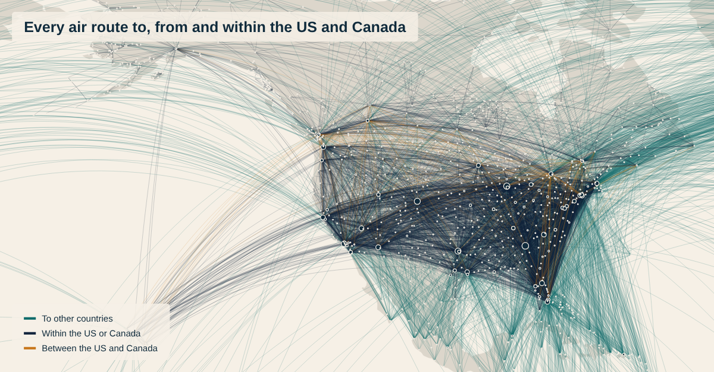

Every air route in the US and Canada on one map
This is every scheduled air route to, from and within the US and Canada: 7,225 airport pairs and 1.3 billion seats a year. [CHECK period]

Most of it never leaves home. 84% of seats are on routes within the US or within Canada. 13% go to other countries, and only 3% cross the US–Canada border.
Atlanta is the busiest airport on the map, then Chicago O'Hare, Denver and Dallas/Fort Worth. The busiest route is Los Angeles to San Francisco. Across the border, it is New York LaGuardia to Toronto.
I drew it with my route map tool. It takes a table of routes, looks up every airport and draws the great-circle path between them. With this many routes, the lines are see-through, so the busy corridors build up darker.
Source: [CHECK provider] airline schedules, [CHECK period].
Units: seats, both directions added together.